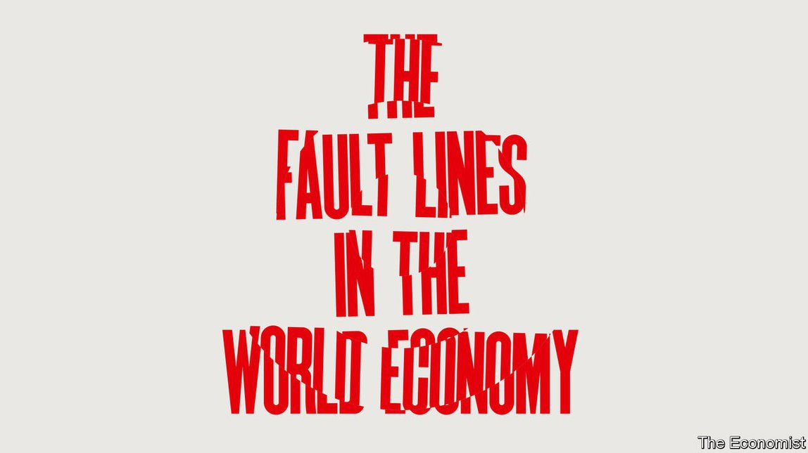

2021-07-19T15:10:00+00:00
【首文】全球增长
世界经济版图下方的新断层线
全球经济正迅速恢复增长。但疫情后的复苏不均衡且脆弱
新冠疫情造成了可怕的经济衰退，但现在一种怪异又令人兴奋的繁荣正如火如荼地上演。油价已经飙升，而餐馆和运输公司为了招募人手不得不各出奇招。上市公司预期今年盈利将创历史新高，股市也一路高歌猛进。摩根大通和埃信华迈（IHS Markit）编制的一项指数显示，全球经济增长正处于2006年繁荣期以来的最高水平。
任何从疫情悲剧的挣脱都可喜可贺。但今天红火的经济也引发了焦虑，因为繁荣的表面之下隐藏着三条断层线。它们将共同决定谁将成功，以及这场人们记忆中最不寻常的复苏能否持续下去。
第一条断层线分隔接种与未接种区域。只有那些完成疫苗接种的国家才能遏制疫情。这是商店、酒吧和办公室长期重开、顾客和员工有信心走出家门的前提条件。但全世界只有四分之一的人口接种了第一剂疫苗，只有八分之一的人口获得了完全的保护。即使在美国，一些接种率低下的州也可能受到强传染性的德尔塔毒株的冲击。
第二条断层线出现在供给与需求之间。消费者对电子产品和汽车的需求激增，与此同时微芯片供应短缺却干扰了这些产品的生产。将货物从中国运到美国西海岸港口的成本已经比疫情前翻了两番。即使这些瓶颈得到了缓解，重新开放的经济体又将造成新的失衡。在一些国家，人们似乎更愿意去酒吧小酌，而不是去吧台工作，导致服务业出现结构性人力短缺。房价飙升，预示着租金很快也将上涨。这可能会维持通胀高企，并让人们愈发感到住房成本难以承受。
最后一条断层线来自刺激措施的退出。自去年开始的政府干预到了某个时候总得退出。自疫情爆发以来，富裕国家的央行已经购买了价值超过10万亿美元的资产，现在正紧张地考虑如何抽身才不致因收紧过快而引发资本市场恐慌。中国经济在2020年没有萎缩，它提供了未来前景的预演：今年它收紧了信贷政策，放缓了增长。
与此同时，政府的紧急援助计划也开始到期，例如额外的失业救济和租客保护令。家庭在2022年不太可能再收到新的“刺激支票”。赤字将开始收缩而非扩张，拖累经济增长。到目前为止，各经济体基本上都避免了出现破坏性的破产潮，但一旦紧急贷款到期，而劳动者不能再靠纳税人的钱休无薪假并领取补偿时，没人知道企业将何以应对。
你可能会认为，像疫情这样的极端事件，加上政府前所未有的应对措施，最终会引发同样极端的全球经济反应。悲观者担心会重返上世纪70年代那种大通胀，或是一场金融崩溃，或者资本主义的基础能量会被政府救济消耗殆尽。这种世界末日般的结局有可能出现，但概率不大。要思考这一不寻常的前景，更好的办法是考察这三条断层线在不同经济体中不同的相互作用。
先看美国。疫苗充足加之庞大的经济刺激措施，使得美国呈现出最大的经济过热风险。最近几个月，通胀达到了上世纪80年代初以来的最高水平。随着经济活动的转变，劳动力市场正在承压。即使6月份总体就业人数增加了85万，并有大量职位空缺，休闲和酒店业的就业人数仍比疫情前低12%。劳动者不愿重返这个行业，这推高了工资。时薪比2020年2月高出近8%。也许到了9月紧急失业救济到期之后工人还会回来。但在澳大利亚等没有发放紧急失业救济的国家也出现了劳动力短缺。对工作的态度变化似乎不仅仅发生在梦想着游艇和休假的富裕专业人士中间，也浮现于服务员和清洁工这类收入最低的人群中。所有这一切都表明美国经济将不断升温，美联储也将持续受到收紧政策的压力。
在其他发达国家，状况没有那么火热。其中包括一些在疫苗接种上落后的国家，例如完全接种率还不到15%的日本。欧洲的接种水平正在迎头赶上，但其经济刺激规模相对较小，意味着通胀尚未跟上美国的水平。在英国、法国和瑞士，截至5月底仍有8%到13%的员工依赖无薪休假计划。对于所有这些经济体，风险在于政策制定者对暂时的输入性通胀反应过度，过快撤回支持。这将打击其经济，就像2007至2009年金融危机后在欧元区发生的那样。
中低收入国家陷入了困境。它们本应从全球对大宗商品和工业品的需求激增中获益，眼下却在苦苦挣扎。印尼正在抗击新一轮疫情，被迫将工业用氧气调配给医院。最贫穷的国家极度缺乏疫苗，预计在2021年的经济增速将低于富裕国家，这将是25年来仅仅第三次。
新兴市场的复苏被疫情拖累之际，仍需面对美联储加息的前景。一旦加息，投资者将买入美元，通常会给新兴货币构成下行压力，增加金融不稳定的风险。这些国家的央行没有忽视暂时性或输入性通胀的余地。巴西、墨西哥和俄罗斯最近都提高了利率，更多国家可能会效仿。接种太晚再加上紧缩太早，境况将相当痛苦。
准备好避难掩护
这一轮经济周期非常疯狂，仅用一年的时间就将衰退远远抛在后面。也许到2022年夏天，大多数人将已接种疫苗，企业已经适应了新的需求模式，同时刺激措施也将有序撤出。然而，在这场怪异的繁荣之中，要小心提防那些断层线。
2021-07-19T15:10:00+00:00
Global growth
The new fault lines on which the world economy rests
Global growth is coming back fast. But the recovery from the pandemic is uneven and fragile
THE PANDEMIC caused a fearsome economic slump, but now a weird, exhilarating boom is in full swing. The oil price has soared, while restaurants and haulage firms are having to fight and flatter to recruit staff. As listed firms signal that profits will hit an all-time high this year, stockmarkets are on a tear. An index produced by JPMorgan Chase and IHS Markit suggests that global growth is at its highest since the exuberant days of 2006.
Any escape from covid-19 is a cause for celebration. But today’s booming economy is also a source of anxiety, because three fault lines lie beneath the surface. Together, they will determine who prospers, and whether the most unusual recovery in living memory can be sustained.
The first fault line divides the jabs from the jab-nots. Only those countries getting vaccinations into arms will be able to tame covid-19. That is the condition for shops, bars and offices to reopen permanently, and customers and workers to have the confidence to leave their homes. But only one in four people around the world has had a first dose of vaccine and only one in eight is fully protected. Even in America some under-vaccinated states are vulnerable to the infectious Delta variant of the virus.
The second fault line runs between supply and demand. Shortages of microchips have disrupted the manufacture of electronics and cars just when consumers want to binge on them. The cost of shipping goods from China to ports on America’s west coast has quadrupled from its pre-pandemic level. Even as these bottlenecks are unblocked, newly open economies will create fresh imbalances. In some countries people seem keener to go for a drink than they do to work behind the bar, causing a structural labour shortage in the service sector. House prices have surged, suggesting that rents will soon start to rise, too. That could sustain inflation and deepen the sense that housing is unaffordable.
The final fault line is over the withdrawal of stimulus. At some point, the state interventions that began last year must be reversed. Rich-world central banks have bought assets worth over $10trn since the pandemic began and are nervously considering how to extricate themselves without causing a flap in capital markets by tightening too fast. China, whose economy did not shrink in 2020, offers a sign of what is to come: it has tightened credit policy this year, slowing its growth.
Meanwhile, emergency government-aid schemes, such as unemployment-insurance top-ups and eviction moratoriums, are beginning to expire. Households are unlikely to get a fresh infusion of “stimmies” in 2022. Deficits will contract rather than expand, dragging down growth. So far, economies have largely avoided a wave of damaging bankruptcies but nobody knows how well firms will cope once emergency loans come due and workers can no longer be furloughed at taxpayers’ expense.
You might think that an event as extreme as a pandemic, combined with the unprecedented government response to it, would eventually trigger an equally extreme global economic reaction. Pessimists worry about a return to 1970s-style inflation, or a financial crash, or that capitalism’s underlying energy will be drained by state handouts. Such apocalyptic outcomes are possible, but they are not likely. Instead a better way to think about the unusual outlook is to examine how the three fault lines interact differently in different economies.
Start with America. With abundant vaccines and enormous stimulus, it is at the biggest risk of overheating. In recent months inflation has reached levels not seen since the early 1980s. Its labour market is coming under strain as economic activity shifts. Even after a rise of 850,000 in the number of jobs in June and accounting for abundant vacancies, the number of people working in leisure and hospitality is 12% lower than before the pandemic. Workers are reluctant to return to the industry, which has pushed up wages. Hourly pay is almost 8% higher than in February 2020. Perhaps they will come back when emergency unemployment benefits expire in September. But countries without such a scheme, like Australia, are also seeing a labour shortage. Attitudes to work may be changing at the bottom of the income spectrum, among waiters and cleaners, not just among well-heeled professionals who dream of yachts and sabbaticals. All this suggests that America’s economy will run hot, with continual pressure on the Federal Reserve to tighten policy.
Elsewhere in the rich world the picture is less exuberant. It includes some jab-nots, like Japan, which has fully vaccinated less than 15% of its population. Europe is catching up on vaccines, but its smaller stimulus means that inflation has not reached American levels. In Britain, France and Switzerland 8-13% of employees remained on furlough schemes at the end of May. In all these economies the risk is that policymakers overreact to temporary, imported inflation, withdrawing support too quickly. If so, their economies will suffer, just as the euro area suffered after the financial crisis of 2007-09.
Low- and middle-income countries are in a bind. They should be benefiting from surging global demand for commodities and factory goods, but they are struggling. Indonesia, battling another covid-19 wave, is redeploying oxygen from industry to hospitals. In 2021 the poorest countries, which are desperately short of vaccines, are forecast to grow more slowly than rich countries for only the third time in 25 years.
Even as covid-19 weakens their recoveries, emerging markets face the prospect of higher interest rates at the Fed. That tends to put downward pressure on their currencies as investors buy dollars, raising the risk of financial instability. Their central banks do not have the luxury of ignoring temporary or imported inflation. Brazil, Mexico and Russia have raised interest rates recently, and more places may follow. The combination of jabbing too late and tightening too soon will be painful.
Prepare to take shelter
The economic cycle has been frantic, leaving the slump far behind in only a year. Perhaps by the summer of 2022 most people will be vaccinated, business will have adapted to new patterns of demand and stimulus will be unwinding in an orderly way. In this weird boom, however, beware those fault lines. ■
2021-07-19T15:10:00+00:00
【首文】全球增長
世界經濟版圖下方的新斷層線
全球經濟正迅速恢復增長。但疫情後的復蘇不均衡且脆弱
新冠疫情造成了可怕的經濟衰退，但現在一種怪異又令人興奮的繁榮正如火如荼地上演。油價已經飆升，而餐館和運輸公司為了招募人手不得不各出奇招。上市公司預期今年盈利將創歷史新高，股市也一路高歌猛進。摩根大通和埃信華邁（IHS Markit）編製的一項指數顯示，全球經濟增長正處於2006年繁榮期以來的最高水平。
任何從疫情悲劇的掙脫都可喜可賀。但今天紅火的經濟也引發了焦慮，因為繁榮的表面之下隱藏着三條斷層線。它們將共同決定誰將成功，以及這場人們記憶中最不尋常的復蘇能否持續下去。
第一條斷層線分隔接種與未接種區域。只有那些完成疫苗接種的國家才能遏制疫情。這是商店、酒吧和辦公室長期重開、顧客和員工有信心走出家門的前提條件。但全世界只有四分之一的人口接種了第一劑疫苗，只有八分之一的人口獲得了完全的保護。即使在美國，一些接種率低下的州也可能受到強傳染性的德爾塔毒株的衝擊。
第二條斷層線出現在供給與需求之間。消費者對電子產品和汽車的需求激增，與此同時微芯片供應短缺卻干擾了這些產品的生產。將貨物從中國運到美國西海岸港口的成本已經比疫情前翻了兩番。即使這些瓶頸得到了緩解，重新開放的經濟體又將造成新的失衡。在一些國家，人們似乎更願意去酒吧小酌，而不是去吧台工作，導致服務業出現結構性人力短缺。房價飆升，預示着租金很快也將上漲。這可能會維持通脹高企，並讓人們愈發感到住房成本難以承受。
最後一條斷層線來自刺激措施的退出。自去年開始的政府干預到了某個時候總得退出。自疫情爆發以來，富裕國家的央行已經購買了價值超過10萬億美元的資產，現在正緊張地考慮如何抽身才不致因收緊過快而引發資本市場恐慌。中國經濟在2020年沒有萎縮，它提供了未來前景的預演：今年它收緊了信貸政策，放緩了增長。
與此同時，政府的緊急援助計劃也開始到期，例如額外的失業救濟和租客保護令。家庭在2022年不太可能再收到新的“刺激支票”。赤字將開始收縮而非擴張，拖累經濟增長。到目前為止，各經濟體基本上都避免了出現破壞性的破產潮，但一旦緊急貸款到期，而勞動者不能再靠納稅人的錢休無薪假並領取補償時，沒人知道企業將何以應對。
你可能會認為，像疫情這樣的極端事件，加上政府前所未有的應對措施，最終會引發同樣極端的全球經濟反應。悲觀者擔心會重返上世紀70年代那種大通脹，或是一場金融崩潰，或者資本主義的基礎能量會被政府救濟消耗殆盡。這種世界末日般的結局有可能出現，但概率不大。要思考這一不尋常的前景，更好的辦法是考察這三條斷層線在不同經濟體中不同的相互作用。
先看美國。疫苗充足加之龐大的經濟刺激措施，使得美國呈現出最大的經濟過熱風險。最近幾個月，通脹達到了上世紀80年代初以來的最高水平。隨着經濟活動的轉變，勞動力市場正在承壓。即使6月份總體就業人數增加了85萬，並有大量職位空缺，休閑和酒店業的就業人數仍比疫情前低12%。勞動者不願重返這個行業，這推高了工資。時薪比2020年2月高出近8%。也許到了9月緊急失業救濟到期之後工人還會回來。但在澳大利亞等沒有發放緊急失業救濟的國家也出現了勞動力短缺。對工作的態度變化似乎不僅僅發生在夢想着遊艇和休假的富裕專業人士中間，也浮現於服務員和清潔工這類收入最低的人群中。所有這一切都表明美國經濟將不斷升溫，美聯儲也將持續受到收緊政策的壓力。
在其他發達國家，狀況沒有那麼火熱。其中包括一些在疫苗接種上落後的國家，例如完全接種率還不到15%的日本。歐洲的接種水平正在迎頭趕上，但其經濟刺激規模相對較小，意味着通脹尚未跟上美國的水平。在英國、法國和瑞士，截至5月底仍有8%到13%的員工依賴無薪休假計劃。對於所有這些經濟體，風險在於政策制定者對暫時的輸入性通脹反應過度，過快撤回支持。這將打擊其經濟，就像2007至2009年金融危機後在歐元區發生的那樣。
中低收入國家陷入了困境。它們本應從全球對大宗商品和工業品的需求激增中獲益，眼下卻在苦苦掙扎。印尼正在抗擊新一輪疫情，被迫將工業用氧氣調配給醫院。最貧窮的國家極度缺乏疫苗，預計在2021年的經濟增速將低於富裕國家，這將是25年來僅僅第三次。
新興市場的復蘇被疫情拖累之際，仍需面對美聯儲加息的前景。一旦加息，投資者將買入美元，通常會給新興貨幣構成下行壓力，增加金融不穩定的風險。這些國家的央行沒有忽視暫時性或輸入性通脹的餘地。巴西、墨西哥和俄羅斯最近都提高了利率，更多國家可能會效仿。接種太晚再加上緊縮太早，境況將相當痛苦。
準備好避難掩護
這一輪經濟周期非常瘋狂，僅用一年的時間就將衰退遠遠拋在後面。也許到2022年夏天，大多數人將已接種疫苗，企業已經適應了新的需求模式，同時刺激措施也將有序撤出。然而，在這場怪異的繁榮之中，要小心提防那些斷層線。